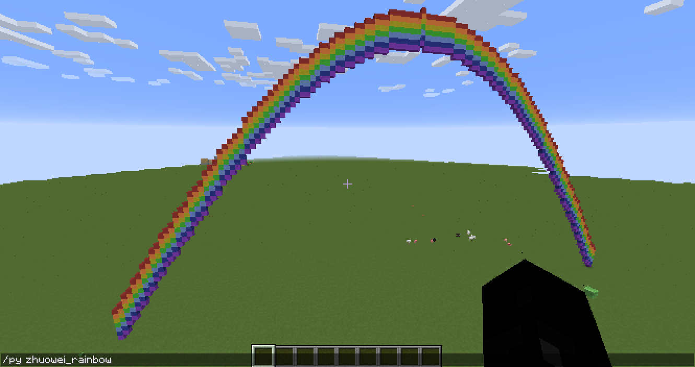

A Minecraft Coding environment
Here's a summary of the steps to install Minecraft with Forge, the two Forge mods "Raspberry Jam Mod" and "PythonTool Mod" and configure the coding environment to my preferred arrangement. I am using this on my own computers (work's Mac, and my openSUSE PCs) as well as my son's Windows 10 PC.
System Requirements¶
- Computer: A PC-compatible, or an Apple Macintosh
- Operating system: I have tested this on macOS, and with Windows 10 and openSUSE Tumbleweed for the PC
- A text editor: I recommend Microsoft Visual Studio Code, but any will do, such as IDLE, which comes with Python
- Java runtime: use the one that comes with your macOS or Linux operating system; or get Oracle Java for Windows
- Python: you can use a Python 3 for your operating system
(You may be wondering why I'm recommending VS Code over Spacemacs — Code is a whole heck easier to install and set up on Windows, and it's not half bad as a go-to editor anyway, especially for kids.)
Detailed instructions for setting all of this up in Windows or Mac are pretty well covered by either the Raspberry Jam instructable, or the PythonTool instructions.
Here is how I've installed on the base requirements
SUSE Linux¶
-
MS VS Code: Microsoft's instructions for setting up in Linux include support for SUSE. I prefer to use
zypperto add and modify the repo rather than hack the.repoconfiguration file directly:sudo rpm --import https://packages.microsoft.com/keys/microsoft.asc sudo zypper ar -f https://packages.microsoft.com/yumrepos/vscode code sudo zypper install code -
Java: if not already installed, then this will do:
sudo zypper install java-1_8_0-openjdk(You can install a complete development pattern with
devel_javathat has a more up-to-date Java and some development tools, but it's not needed for Minecraft coding in Python) -
Python 3: I have instructions for setting up Python 3 development for my blog. This should be enough for Minecraft:
sudo zypper install \ pattern:devel_python3 \ python3-virtualenv \ python-devel
You could of course combine all of those install steps into one long one….
macOS¶
You can visit web sites and use installer images. For instance Microsoft's Code instructions for Mac. I prefer to use Homebrew to install the requirements though:
-
Homebrew: (if not already installed):
/usr/bin/ruby -e "$(curl -fsSL https://raw.githubusercontent.com/Homebrew/install/master/install)" -
MS VS Code:
brew cask install visual-studio-code - Java: (this is included with macOS)
-
Python 3:
brew install python3
Windows 10¶
Download and install the pre-requisites with Windows installers:
- MS VS Code: follow Microsoft's instructions for Windows
- Java: download the installer from Oracle's Java.com website and run it to install. Be watchful that the installer doesn't also offer to change your Web Browser to have a different Home Page or add any Search Bar extensions...
- Python 3: visit the Python website. In the Downloads menu the web site should figure out which is the correct installer for your Windows computer. Download that and install it
Minecraft Java setup¶
-
Visit the Minecraft downloads page (you'll have to login, which means creating/purchasing an account if you don't already have one):
-
Install per normal (for the JAR, just move it from your Downloads to somewhere handy) and run the game once to create a game Profile and download the game assets from Mojang (type
java -jar Minecraft.jarfrom a Terminal to run the JAR, or double-click it should work too on Linux and Mac). -
After your first run of the game, the Profile will be in one of these locations on your computer's Hard Drive, depending on the operating system:
-
Windows PC:
C:\Users\you\AppData\Roaming\.minecraft -
Macintosh:
/Users/you/Library/Application Support/minecraft -
Linux:
/home/you/.minecraft
(where "you" is your user name on the computer.)
-
Windows PC:
-
It's a good idea to make a Shortcut or link to the Profile because you'll be going to it often
-
Windows: Go to your AppData directory (it's hidden, you'll have to turn on "Show Hidden Files" first), then Right-click and Drag the .minecraft folder to your desktop; then select "Create Shortcut here" from the pop-up menu. Or enter these commands from a CMD.EXE Command Prompt to make a new
fundirectory with a link in it:cd %USERPROFILE% md fun mklink /d fun\minecraft %APPDATA%\.minecraft -
Macintosh: Go to your Application Support folder (it's hidden in the Finder. Press Command-Shift-G and type
~/Libraryto go to it's parent). Then Command-Drag the minecraft Profile folder to your desktop. Or you can make a link from the Terminal like in Linux:cd mkdir fun ln -s ~/Library/Application\ Support/minecraft fun/minecraft -
Linux: in a Terminal, type:
cd mkdir fun ln -s ~/.minecraft fun/minecraft
-
You can now reach the Minecraft Profiles quickly and easily. This is where Minecraft's game settings and Worlds are kept. It's also where we install the mod's, so for brevity, since the instructions from here on are the same for each OS, I'll call this location $MCPROFILE. You can substitute that for "~/fun/minecraft" or one of the locations above for your operating system.
Hack Minecraft options¶
Fire up your shiny new editor and edit the Minecraft options file, $MCPROFILE/options.txt. You want to search for the option to pause when the game loses focus, and turn that OFF (so that your Minecraft continues to play when you're using your editor, like Minecraft Pi edition does). In Code you can press Control-F to find (Command-F on a Mac) and enter "pause", that should find it. Change the line to look like this:
pauseOnLostFocus:falseand then Save the file (Control-S or Command-S). Next time you start Minecraft it'll behave like the Pi edition.
Install Forge and mods¶
Since I'm using PythonTool Mod, then the install instructions for that are the most appropriate to follow. This also installs Forge and Raspberry Jam.
- Download Forge and PythonTool Mod from the links on the PythonTool Mod downloads page. For Forge, download the Installer (with an icon that looks like a filing box)
- Run the installer to install Forge (
java -jar ~/Downloads/forge-1.10.2-12.18.3.2511-installer.jar). When it asks where Minecraft is, just choose the$MCPROFILEdirectory from earlier - Start the Minecraft Launcher and Click on Launch options. Turn on the "Advanced settings" switch. There should be a new profile created by the Forge installer, called forge. Click that to edit it
- Confirm that the Version is "release 1.10.2" or similar. Note: it must be the latest supported by PythonTool, which is 1.10 when this post was written
- Change the JVM arguments and increase the amount of memory used by Minecraft to about ½ to ¾ of your computer's RAM. That is, if you have a PC with 4GB of RAM, then you want it to say
-Xmx2G - Click Save
- Click the News and look in the PLAY button. Be sure it's using your "forge" profile and if not, choose it by clicking the arrow to the side of PLAY and picking it from the list
- Click PLAY to run the game. Minecraft will start and you should see a new "Mods" option on the main menu. You may notice a different animation on the splash screen while Minecraft loads, this is normal
Install Raspberry Jam¶
- Download these from the Raspberry Jam release page:
- mods.zip - the actual Raspberry Jam Forge mods (zip contains mods for different Minecraft versions)
- python-scripts.zip - example code and MCPIPY library
- Unzip both and place them into your
$MCPROFILEdirectory. The Mods go to$MCPROFILE/modsand the scripts go to$MCPROFILE/mcpipy
Install PythonTool¶
- Move the
pythontool-0.8.jar(or later version) which you downloaded at the beginning, into the$MCPROFILE/modsdirectory
This is enough to get you going either with the instructions from PythonTool or the Raspberry Jam instructable (from after its steps on installing all the prerequisits).
Testing your setup¶
Now is a good time to start Minecraft with your forge profile and confirm that it's working, and that Raspberry Jam and PythonTool both function properly.
- Start Minecraft with the forge profile. You should see a "Mods" main-menu item and detail in the lower-left corner confirming that Forge has loaded with some modules
- Choose Mods from the main menu and confirm that Raspberry Jam and PythonTool Mods have been loaded. They will appear in the Mod List:
- Start a Single Player game, Create a new World, Creative Mode, Superflat
- Run a python script with Raspberry Jam:
- Pressing
Tto Talk (opens the Chat) - Type
/py zhouwei-rainbowin the Chat. A Rainbow should be created! 
- Pressing
- PythonTool gives you a new Block type called "Computer".
- Equip a Computer and Use it
- You should see that it works like a Chest and has items for all the Python Scripts from the python-scripts.zip file. You can Equip those and Use them to run them instead of typing /py all the time.
- Try one, such as the dohnut. Equip the donut by finding it in the Scripts and dragging it to the equip bar, and then press
ESCand Use it:
If it all has gone well, you're good to continue.
Hacking environment¶
I like to have a separate folder for my own Minecraft Python scripts. Then I can copy in examples from the python-scripts.zip file one at a time, add them to source control such as git, and make changes, tracking what I did. PythonTool supports this, which is the main reason why I want to use it.
First, create a folder for your hacks. I keep mine in ~/hax/minecraft:
md -p ~/hax/minecraft
cd ~/hax/minecraft
git initNow copy in a script from python-scripts. Let's use Zhouwei's rainbow again:
cp ~/hax/python-scripts/zhouwei-rainbow.py .
git add .
git commit -m "add a rainbow from the examples. This will be changed a bit later on"And now configure PythonTool Mod to refer to this directory for scripts. In the Mod Lists screen, click on PythonTool Mod and then press the Config button:
You want to change the Script Path Configuration and set the Script Folder to be the folder you just made with the single script in it:

We're ready to hack! But while we're here I like to set up a Python environment too. We'll get back to this later on. I'm using My Python virtualenv scripts here:
mkvenv minecraft
activate minecraft
pip install jupyter-notebook(which reminds me: I should blog about those…)